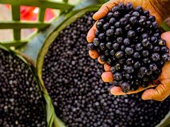

|
O açaizeiro ou palmeira-açaí (Euterpe oleracea), planta responsável pela produção do açaí, é uma monocotiledônea da família Arecaceae, nativa da região amazônica, que abrange, além do Brasil:Venezuela,Colômbia,Equador,Guianas e Peru. No Brasil, cerca de 90% da produção está no estado do Pará.A palmeira do açaí pode atingir mais de 20 metros de altura, e o fruto é formado em cachos. Cada palmeira costuma ter cerca de quatro cachos por ano e cada um deles pode produzir uma quantidade aproximada de três a seis quilos do fruto.Os tipos de açaizeiro são definidos de acordo com a coloração, formas da inflorescência, tipo de cacho e diâmetro dos frutos. Por isso, há diversas denominações, como açaí-roxo ou preto, açaí-branco, açaí-açu, açaí-espada, açaí-sangue-de-boi etc.
Por meio do açaizeiro, além do fruto, também se aproveitam as folhas, raízes, palmito e tronco. Como ele é cultivado, em grande parte, junto à população ribeirinha, as folhas e troncos do açaizeiro são usados para fazer desde casas até para a produção de objetos como bolsas e chapéus, que contribuem com as atividades de subsistência locais. |
 |
Curiosamente, cada região do Brasil tem um costume diferente para consumir o açaí. No Norte e Nordeste, principalmente, ele ocupa um lugar de alimentação básica e é consumido com outros alimentos, como arroz, feijão, carnes, camarão, farinha de tapioca e outros.Os nortistas e nordestinos também costumam consumir o suco do açaí. O fruto é amassado à mão ou em máquinas específicas, peneirado e adicionado à água para ser consumido. Outra forma de consumo é o vinho de açaí. Nesse caso, além de amassada, a fruta passa por um processo de fermentação.Já nas regiões Centro-Oeste, Sul e Sudeste, o açaí é mais considerado uma sobremesa. Sua polpa é utilizada para a produção de sorvetes, vitaminas e diversas misturas geladas que recebem o acréscimo de frutas e guloseimas para as refeições da tarde ou noite.
Essas são algumas das características de cada local, mas as diversas formas de consumo podem ser apreciadas em qualquer região. |